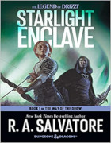
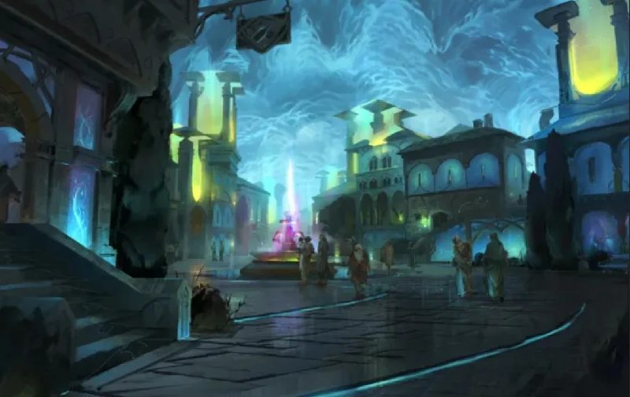

Romans de la série The Way of the Drow
Suite à sa série Generations, R.A. Salvatore publie à partir d'août 2021 une nouvelle série de 3 romans, The Way of the Drow, autour de l'elfe noir Drizzt Do'Urden.
♦
Starlight Enclave. 1490. Deux représentantes des maisons Baerne et Xorlarrin viennent demander au roi nain Bruenor de lui livrer des armes et des armures en vue de la guerre civile qui s’apprête à avoir lieu à Menzoberranzan, principalement entre leurs maisons et la maison Barrison Del'Armgo alliée à la maison Melarn. Jarlaxle, Zaknafein, Artemis Enteri et Catti-brie partent à la recherche de Doum'wielle, de la maison Barrison Del'Armgo, tout au nord de l'Épine dorsale du Monde, mais bien entendu Jarlaxe a un autre but en tête. Drizzt et sa fille Brienne, maintenant âgée de 2 ans, se dirigent quant à eux vers le monastère de la Rose Jaune, accompagnés de Kimmuriel et d'une petite escorte de Bregan D'aerthe.
Avis. J'ai commencé la lecture avec un à priori négatif suite à cette histoire de « repentance » de Salvatore concernant les elfes noirs, mais Starlight Enclave a été pour moi une bonne surprise. Une belle aventure, cohérente et sans excès, avec des surprises et du suspens. Les aevendrows sont de plus bien amenés. Ça faisait longtemps que lire cet auteur ne m'avait pas donné autant de plaisir. Je recommande !
♦
Callidae, la cité des aevendrows, les elfes de la lumière des étoiles
Population : près de 45 000 aevendrows (plus de deux fois la taille de Menzoberranzan) et plus de 7500 nains, humains, orcs et éladrins.
La gouverneure actuelle est Mona Valrissa Zhamboule. Le titre est attribué suite à une élection.
La cité est divisée en quatre quartiers : Scellobel, Mona Chess, Ardin et B'shett.
La bataille de Cazzcalci a lieu chaque année à l'équinoxe d'automne et oppose dans un match sanglant 4 équipes de 25 « soldats » représentant chacune un des quatre quartiers.
